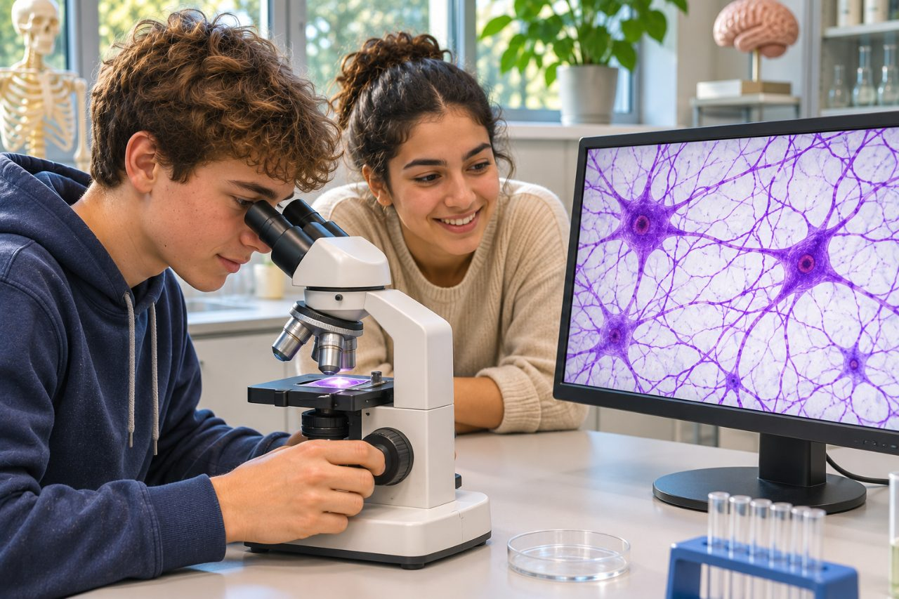

Zentral und peripher
Denk mal nach: Im Bild leuchten Kopf, Rücken, Arme und Beine. Was könnte da leuchten – und warum reicht es bis in die Fingerspitzen?
Auf dem Snowboard ändert sich jede Sekunde etwas: die Kurve, der Schnee, das Gleichgewicht. Kippt das Board, gleichen Arme, Beine und Rumpf sofort aus. Damit das klappt, arbeiten Sinnesorgane, Muskeln und das eng zusammen.
Das Nervensystem steuert den ganzen Körper. Es hat zwei Bereiche. Gehirn und bilden das , kurz ZNS. Von dort zieht ein feines Netz aus durch den ganzen Körper. Dieses Netz heißt .
Im peripheren Nervensystem gibt es zwei Arten von Nerven. bringen Meldungen von den Sinneszellen zum Rückenmark und zum Gehirn. bringen Befehle vom Gehirn zu den Muskeln.
Das Nervensystem im Körper
Tippe auf die Zahlen im Bild. Mit den Knöpfen unter dem Bild hebst du das zentrale oder das periphere Nervensystem hervor.
MERKE
- Das Nervensystem steuert den Körper.
- Zentrales Nervensystem (ZNS) = Gehirn + Rückenmark.
- Peripheres Nervensystem = Netz aus Nervenfasern im ganzen Körper. Es verbindet Sinneszellen, Muskeln und Organe mit Gehirn und Rückenmark.
- Empfindungsnerven (sensorische Nerven) bringen Meldungen zum Gehirn. Bewegungsnerven (motorische Nerven) bringen Befehle zu den Muskeln.
Zentral oder peripher?
Tippe eine Karte an und dann den passenden Bereich.
Zwei Bereiche, zwei Arten von Nerven
Tippe zuerst auf eine Lücke, dann auf das passende Wort. Zwei Wörter bleiben übrig.
Das Gehirn und seine Teile
Im Gehirn arbeiten etwa 90 Milliarden . Sie sind miteinander verbunden und tauschen ständig Signale aus. Das Gehirn ist die Steuerzentrale des Körpers.
Es besteht aus mehreren Teilen. Jeder Teil hat eigene Aufgaben – aber alle arbeiten zusammen. Beim Snowboarden zum Beispiel planst du die Fahrt, hältst die Balance, atmest schneller und bekommst Durst. Dafür sind verschiedene Teile zuständig.
Der größte Teil ist das . Es hat zwei Hälften. Sie sind über den miteinander verbunden.
Das Großhirn verarbeitet, vergleicht und beurteilt alle Informationen. Hier wird uns bewusst, was wir sehen, hören und fühlen. Es steuert bewusste Handlungen wie Sprechen und Schreiben. Hier denken wir, und hier sitzt unser Gedächtnis.
Tippe nacheinander auf die farbigen Teile des Gehirns. Lies, wofür jeder Teil zuständig ist. Danach prüft dich die Aufgabe „Wer ist zuständig?“ – dann ohne Namen.
MERKE
- Im Gehirn arbeiten etwa 90 Milliarden Nervenzellen.
- Großhirn: größter Teil, zwei Hälften, über den Balken verbunden; verarbeitet und beurteilt alle Informationen; bewusstes Sehen, Hören, Fühlen; Sprechen, Schreiben, Denken; Gedächtnis.
- Zwischenhirn: Hunger, Durst, Körpertemperatur.
- Kleinhirn: Bewegungsabläufe wie Radfahren und Schwimmen.
- Mittelhirn: Schaltstelle; verknüpft bewusste und unbewusste Vorgänge.
- Verlängertes Mark: Atmung, Herzschlag, Reflexe.
Die Steuerzentrale
Tippe zuerst auf eine Lücke, dann auf das passende Wort. Zwei Wörter bleiben übrig.
Erkläre in eigenen Worten ✨ KI prüft
Schreibe ganze Sätze oder Stichpunkte. Die KI achtet nur auf den Inhalt, nicht auf die Rechtschreibung.
Das Rückenmark
Das Rückenmark beginnt am Gehirn. Es zieht durch den Rücken nach unten bis in den . Es ist weich und empfindlich. Deshalb liegt es gut geschützt in der Wirbelsäule: Jeder Wirbel hat ein Loch. Alle Löcher übereinander bilden den .
Zwischen den Wirbeln gibt es seitliche Öffnungen. Dort treten die aus. Jeder von ihnen ist für einen bestimmten Bereich des Körpers zuständig.
Schneidet man das Rückenmark quer durch, sieht man zwei Bereiche. Innen liegt die . Sie sieht aus wie ein Schmetterling. Außen herum liegt die .
Hinten am Rückenmark kommen die Empfindungsnerven an, vorn gehen die Bewegungsnerven ab. So ist das Rückenmark die Verbindung zwischen Gehirn und Körper: Meldungen laufen hinauf, Befehle laufen hinunter.
Das Rückenmark im Querschnitt
So sieht ein Wirbel mit dem Rückenmark von oben aus. Oben ist hinten (Rücken), unten ist vorn (Bauch).
MERKE
- Das Rückenmark zieht vom Gehirn bis in den Lendenbereich.
- Es liegt geschützt im Wirbelkanal der Wirbelsäule.
- Durch seitliche Öffnungen zwischen den Wirbeln treten die Rückenmarksnerven aus. Jeder ist für einen Körperbereich zuständig.
- Querschnitt: innen die graue Substanz (Schmetterling), außen die weiße Substanz. Hinten kommen die Empfindungsnerven an, vorn gehen die Bewegungsnerven ab.
Was stimmt über das Rückenmark?
Nervenzelle und Synapse

Denk mal nach: Auf dem Bildschirm siehst du angefärbte Nervenzellen. Woran erkennst du, wo eine Zelle aufhört und die nächste beginnt?
Unter dem sehen Nervenzellen aus wie Sterne mit langen, verzweigten Armen. Jede Nervenzelle hat einen Zellkörper mit einem Zellkern. Aus dem Zellkörper wachsen viele verzweigte Ausläufer, die Fortsätze.
Einer der Fortsätze ist besonders lang: die Nervenfaser. Sie kann bis zu 1 m lang sein – zum Beispiel vom Rückenmark bis in den Fuß. An ihrem Ende verzweigt sie sich in viele . Das sind die Kontaktstellen zur nächsten Nervenzelle, zu einem Muskel oder zu einem Organ.
Nervenzellen sind darauf spezialisiert, Informationen weiterzuleiten – als elektrische . Die schnellsten schaffen bis zu 135 Meter pro Sekunde.
Die Teile einer Nervenzelle
Zwei Nervenzellen berühren sich nicht. Zwischen dem Endknöpfchen und der nächsten Zelle liegt ein winziger Spalt. Diese Kontaktstelle heißt .
Der elektrische Impuls kann den Spalt nicht überspringen. Stattdessen gibt das Endknöpfchen chemische ab. Wie es dann weitergeht, zeigt die Animation.
Wie schnell ist ein Nervenimpuls? Lass ihn eine Sekunde lang gegen ein Fahrrad, ein Auto und ein Flugzeug antreten. Probiere alle drei aus.
| Gegner | Tempo | Strecke in 1 Sekunde | Vergleich mit dem Nervenimpuls (135 m in 1 Sekunde) |
|---|
MERKE
- Nervenzelle: Zellkörper mit Zellkern, viele verzweigte Fortsätze, eine lange Nervenfaser (bis zu 1 m) und Endknöpfchen.
- Nervenzellen leiten Informationen als elektrische Impulse weiter – bis zu 135 m pro Sekunde.
- Synapse = Kontaktstelle zwischen zwei Nervenzellen mit einem Spalt. Impuls → Endknöpfchen gibt Überträgerstoffe ab → nächste Zelle nimmt sie auf → neuer Impuls.
- Die Information läuft nur in eine Richtung: Die Synapse ist eine Einbahnstraße.
So arbeitet eine Synapse
Bringe die Schritte mit den Pfeilen in die richtige Reihenfolge.
Erkläre in eigenen Worten ✨ KI prüft
Schreibe ganze Sätze oder Stichpunkte. Die KI achtet nur auf den Inhalt, nicht auf die Rechtschreibung.
Training
Löse das Kreuzworträtsel
Tippe in ein Kästchen und schreibe. Tippst du ein Kästchen zweimal an, wechselt die Richtung. Ü schreibst du als UE, Ö als OE, ß als SS. Hängst du fest? Bei jeder Frage hilft 💡 Tipp – erst ein Hinweis, dann der Anfangsbuchstabe. Mit 📋 Wörter zeigen siehst du alle Lösungswörter.
Kreuze an
Profi-Check, Lernkarten und Regelheft
Der Aufbau des Nervensystems
Nervensystem = zentrales Nervensystem (ZNS: Gehirn + Rückenmark) + peripheres Nervensystem (Netz aus Nervenfasern im ganzen Körper; verbindet Sinneszellen, Muskeln und Organe mit dem ZNS).
Empfindungsnerven (sensorisch) bringen Meldungen zum Gehirn, Bewegungsnerven (motorisch) bringen Befehle zu den Muskeln.
| Das Gehirn (etwa 90 Milliarden Nervenzellen) | |
|---|---|
| Großhirn | zwei Hälften, über den Balken verbunden; Denken, Sprechen, Gedächtnis; hier wird uns bewusst, was wir sehen, hören, fühlen |
| Zwischenhirn | Hunger, Durst, Körpertemperatur |
| Mittelhirn | Schaltstelle: verknüpft bewusste und unbewusste Vorgänge |
| Kleinhirn | Bewegungsabläufe wie Radfahren, Schwimmen |
| verlängertes Mark | Atmung, Herzschlag, Reflexe |
Rückenmark: vom Gehirn bis in den Lendenbereich, geschützt im Wirbelkanal. Rückenmarksnerven treten seitlich zwischen den Wirbeln aus. Innen graue, außen weiße Substanz.
Nervenzelle: leitet elektrische Impulse weiter (bis 135 m/s).
Synapse = Kontaktstelle mit Spalt: Impuls → Endknöpfchen gibt Überträgerstoffe ab → nächste Zelle nimmt sie auf → neuer Impuls. Nur in eine Richtung (Einbahnstraße).
Wortspeicher
Alle Fachbegriffe dieses Moduls auf einen Blick.
Wie geht es weiter?
Du kennst jetzt die Bauteile des Nervensystems: Gehirn, Rückenmark, Nerven, Nervenzellen und Synapsen. Beim Lernen verändern sich die Verbindungen zwischen den Nervenzellen. Wie das Gehirn Neues speichert – und wie du am besten lernst –, erfährst du in Modul 3.